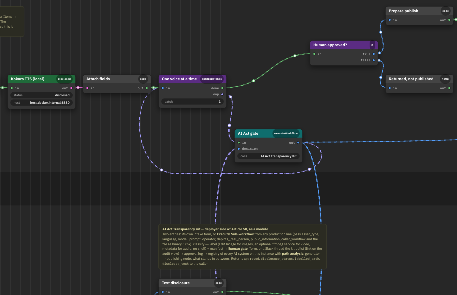
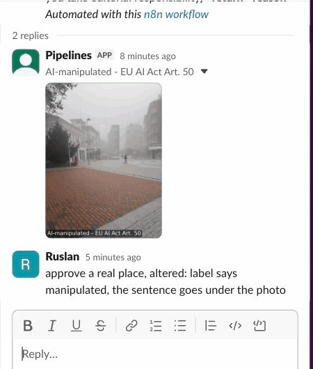
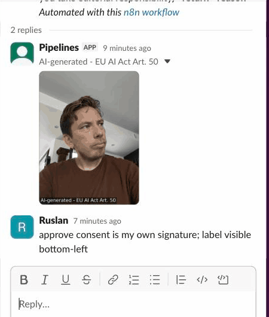
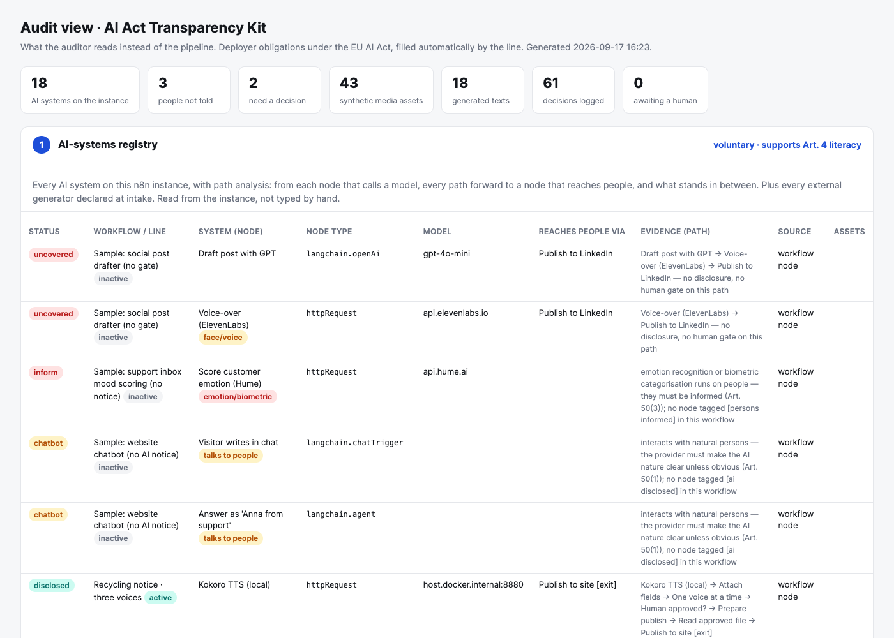
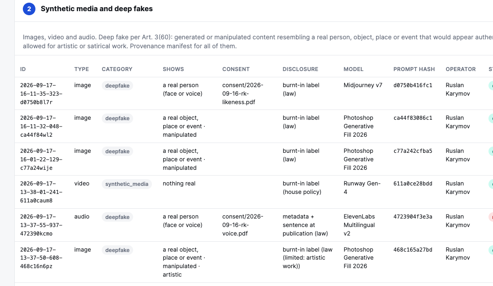

Art. 50(4) §1 · deep fakes
Generated or manipulated image, audio or video that resembles a real person, place, object or event must be labelled. Artistic or satirical work: limited disclosure.
EU AI Act · Article 50 · n8n
An n8n module that turns Article 50 transparency duties into one approval step inside any production line: label, ask a person in Slack, write an append-only record, keep a registry of every AI system on the instance.
Why this exists
Generated or manipulated image, audio or video that resembles a real person, place, object or event must be labelled. Artistic or satirical work: limited disclosure.
AI-generated text published to inform the public must be disclosed, unless a named person took editorial responsibility.
A system that talks to people must make its AI nature clear unless it is obvious.
People exposed to emotion recognition or biometric categorisation must be told.
Most automation lines wire a generator straight into a publish node. Nothing in between knows the law. That gap is what the kit fills.
Where it sits

A real line: notice text → three local TTS voices → AI Act gate → publish only what a human approved. The map is generated from the running workflows, not drawn.
The line passes the asset, the model, the prompt and what it depicts.
The kit classifies under Article 50, burns the label in, stores a manifest.
A person decides in Slack. The kit returns approved, disclosure_status and the labelled file.
Intake → label
Original photo. Varna, fog.

A building added at the end of the street. AI-manipulated label burnt in, sentence goes under the photo.
Same alteration declared as satire. Disclosure limited to a corner label, as Art. 50(4) allows.
Art. 3(60) covers persons, objects, places and events. The classifier reads four intake answers: what it shows, generated or manipulated, artistic or not, consent reference.
The gate


Post with the disclosure sentence and the labelled file → reply approve, editorial or return <reason>. Reviewer identity comes from Slack, not from a text field.
The record
| Asset | Reviewer | Decision | Status | prev → hash |
|---|---|---|---|---|
| text · gpt-4o public notice | Ruslan Slack U0C2N5PEJJV | approve · dates checked against the municipal order | disclosed | 84c55f81 → 92d911ce |
| image · Photoshop GF real place, manipulated | Ruslan Slack U0C2N5PEJJV | approve · label says manipulated, sentence under the photo | disclosed | 5f9ee8ae → 84c55f81 |
| image · Midjourney real person, consent on file | Ruslan Slack U0C2N5PEJJV | approve · consent is my own signature | disclosed | 54c702cf → 5f9ee8ae |
Postgres, two triggers.
BEFORE INSERT computes sha256 over the previous hash and the row. UPDATE and DELETE raise. verify_chain() walks the chain on every audit render.
What an auditor asks first.
Who decided, when, on what basis, and can the record be changed afterwards. Four answers, one table.
The registry

The kit reads all workflows through the n8n API and walks from every model node forward. What stands between the generator and the exit decides the status:
uncovered inform chatbot disclosed internal editorial
The audit view

Section 2 of the audit view: every synthetic asset with what it shows, consent reference, disclosure method, model, prompt hash, operator, status, artefact path.
Numbers from the ledger
These are demo numbers, not a production benchmark: I answered my own requests within seconds. What the numbers prove is the mechanics: every decision landed, the chain verified after each run, nothing was edited by hand.
Take it
Repository
github.com/karusrus/transparency-kit
Case page and live map
karusrus.github.io/transparency-kit · karusrus.github.io/pipeline-map
What I do in a team's first month: inventory every line that calls a model, put the gate where content reaches people, hand compliance a page they can read without opening n8n.